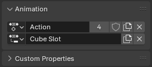
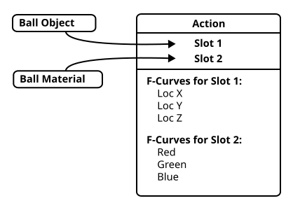
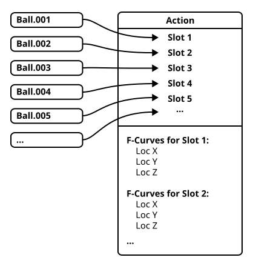
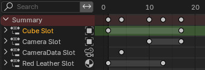
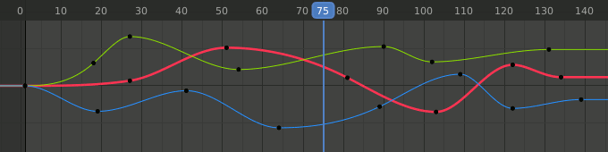
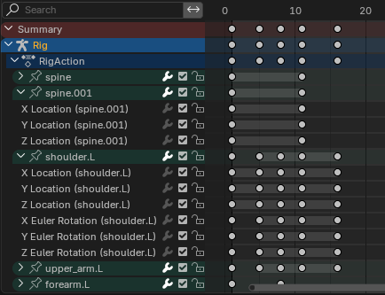
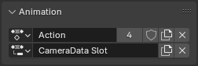
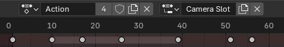
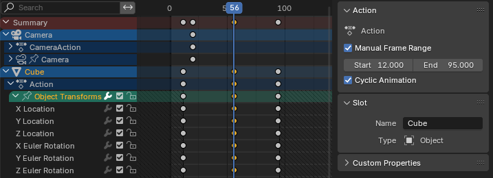

Action¶
Action là container chứa animation data của Blender. Ví dụ, khi bạn animate vị trí của một object, animation đó được lưu trong một action thay vì trực tiếp trên chính object đó. Object sau đó dùng action để được animate, cũng giống như một mesh dùng material để được shading. Tất cả các data-block có thể animate (object, mesh, material, v.v.) đều được animate theo cách này: chúng không tự lưu animation data của riêng mình, mà thay vào đó dùng một action lưu animation data giúp chúng.
Action bản thân cũng là data-block, vì vậy có thể dễ dàng append hoặc link vào các blend file khác. Điều này cho phép action không chỉ được dùng để lưu trữ, mà còn để tổ chức và tái sử dụng animation data. Ví dụ, nếu bạn đang xây dựng một thư viện animation (vòng chạy, cú nhảy, đứng yên, v.v.), mỗi animation có thể nằm trong action riêng của nó, từ đó có thể được link hoặc xuất ra thuận tiện như một animation riêng biệt.
Action Slot¶
Animation data bên trong một action còn được tổ chức thành các Slot. Slot mô tả animation này dành cho cái gì. Ví dụ, bạn animate một mặt cầu quay quanh một khối lập phương, đóng vai trò mặt trăng quay quanh một hành tinh (khối lập phương). Hai thứ này có thể được animate bằng một Action với hai Slot, một tên "Planet" và một tên "Moon".
Tóm lại: tên Action mô tả animation, còn tên Slot mô tả chủ thể của animation đó.
Mỗi action có một tập hợp slot, và các animation data khác nhau cho từng slot. Một data-block được animate sau đó sẽ chỉ định cả một action lẫn một slot trong action đó, xác định data-block được animate bởi animation data nào.

Bộ chọn action và bộ chọn slot đi kèm trong properties của một object, dùng để xem và chọn action cùng slot nào animate object.¶
Mục đích của slot là cho phép một action lưu animation data riêng biệt cho nhiều data-block. Ví dụ, bạn có một animation quả bóng nảy và đổi màu sau mỗi lần nảy, liên quan đến hai data-block: object và material của nó. Slot cho phép bạn đặt cả animation của object lẫn animation của material vào cùng một action, mỗi cái một slot khác nhau.

Hình minh họa một quả bóng và material của nó được nối tới các slot khác nhau trong một action.¶
Trong ví dụ này có một slot cho object và một slot cho material, nhưng bạn có thể có bao nhiêu slot tùy thích cho bấy nhiêu object, material, light, v.v. Nếu bạn bake một mô phỏng 100 quả bóng nảy, bạn có thể lưu animation đó trong một action duy nhất với 100 slot.

Hình minh họa nhiều quả bóng đều được nối tới các slot khác nhau trong một action.¶
Không phải action nào cũng cần tận dụng slot: bạn hoàn toàn có thể dùng 100 action riêng cho các quả bóng nảy đó nếu muốn. Dù vậy, animation data trong một action luôn được tổ chức thành các slot, do đó bạn cần ít nhất một slot trong một action để animate thứ gì đó.
Lưu ý rằng slot không "dành riêng" cho bất kỳ data-block cụ thể nào: data-block nào cũng có thể dùng slot nào. Ví dụ, bạn có thể để hai nhân vật khác nhau dùng cùng một slot trong cùng một action, và cả hai đơn giản sẽ được animate bởi cùng một animation data. Slot chỉ là một cách tổ chức animation data riêng biệt trong một action, và không hề gắn kết cố hữu với bất cứ thứ gì trong scene.
Ghi chú
Về mặt nội bộ, animation data trong một action còn được tổ chức thành các layer và strip. Điều này hiện chưa được expose trong UI và không ảnh hưởng đến cách bạn dùng action lúc này. Nó hoàn toàn là sự chuẩn bị cho các tính năng animation tương lai chưa có trong Blender, và bạn có thể yên tâm bỏ qua nó trong hiện tại.
Tuy nhiên, layer và strip có được expose trong Python API, nên bạn cần lưu ý điều này khi viết script và addon làm việc với action. Xem tài liệu Python API để biết thêm chi tiết.
Tên Slot và Kiểu Liên kết¶
Mỗi slot trong một action có một tên, và bạn có thể đặt tên tùy ý. Theo mặc định, slot mới được đặt tên theo slot cuối cùng được gán cho data-block mà chúng được tạo ra, hoặc theo chính data-block đó nếu nó chưa từng được gán slot nào.
Ngoài việc có tên, mỗi slot còn có một kiểu data-block liên kết mà nó dành cho (ví dụ: "material", "object", v.v.). Kiểu này được tự động đặt khi một slot lần đầu được gán để animate một data-block.
Một trong những nơi bạn có thể thấy kiểu liên kết của slot là channel list của action editor, nơi nó được hiển thị dưới dạng một icon bên cạnh tên slot.

Các slot hiển thị trong channel list của Action Editor, với kiểu liên kết của chúng là một icon bên phải tên.¶
Trong một action, một slot phải có tổ hợp duy nhất gồm tên + kiểu liên kết. Ví dụ, bạn có thể có hai slot cùng tên "Cube" trong một action, miễn là một cái dành cho object và cái kia dành cho material, nhưng không thể nếu cả hai đều dành cho object. Khi cả hai đều dành cho object, kiểu liên kết của chúng giống nhau, và vì vậy chúng phải có tên khác nhau. Trong trường hợp đó Blender sẽ dùng cách quen thuộc và đặt tên chúng là "Cube" và "Cube.001".
Ghi chú
Mặc dù không hữu ích, và Blender khiến việc này khó thực hiện, vẫn có thể khiến slot bị gán cho một data-block sai kiểu. Ví dụ, gán một slot dành cho material vào một object. Không có gì xấu xảy ra nếu bạn làm được điều này, nhưng các F-Curve của slot đó khó lòng khớp với bất kỳ thuộc tính nào trên data-block không tương ứng, và vì vậy sẽ không animate được gì.
F-Curve & Channel¶
F-Curve là đơn vị cơ bản của animation trong Blender, và là loại animation data chính mà action chứa. Mỗi F-Curve chứa các keyframe định nghĩa cách một thuộc tính (như vị trí X của một object) thay đổi theo thời gian.

Graph Editor, hiển thị ba F-Curve cho ba thuộc tính khác nhau.¶
Các animation editor của Blender (như dopesheet, graph editor, v.v.) có một channel list ở bên trái hiển thị các thuộc tính được animate. Với action, các channel này tương ứng với các F-Curve animate những thuộc tính đó.

Channel list của Dopesheet Editor, với các channel được animate của nhiều bone được nhóm dưới tên bone của chúng.¶
Channel còn hỗ trợ một hình thức tổ chức hạn chế gọi là "channel group". Ví dụ, theo mặc định Blender tạo một channel group cho channel của từng bone. Có một vài tính năng trong Blender dựa vào các group này, nhưng chủ yếu chúng chỉ để tiện cho bạn.
Làm việc với Action¶
Khi bạn animate lần đầu một object (hoặc data-block khác) trong Blender, Blender sẽ cố tự động tìm một action phù hợp cho nó, hoặc nếu không tìm được action phù hợp thì sẽ tạo một action mới. Sau khi một action đã được gán, nó cũng tạo và gán một slot mới cho data-block.
Blender dùng heuristic để cố tìm một action phù hợp, dựa trên ý tưởng rằng animation của các data-block có quan hệ gần gũi thường nên nằm trong cùng một action. Ví dụ, một object và data của nó được coi là có quan hệ gần gũi, nên nếu một camera object đã được animate và bạn chèn key cho focal length của nó (nằm trên camera data, không phải camera object), action được gán cho object đó cũng sẽ được tái sử dụng cho camera data. Quan hệ này hoạt động cả hai chiều, nên action cũng sẽ được tái sử dụng khi key camera object nếu camera data đã được animate.
Một vài ví dụ về các data-block khác được coi là có quan hệ gần gũi cho mục đích này: material và node tree nhúng của chúng, world và node tree nhúng của chúng, và mesh cùng dữ liệu shape key của chúng.
Ghi chú
Có một ngoại lệ cho heuristic "quan hệ gần gũi" này, đó là khi một data-block có nhiều hơn một user. Ví dụ, nếu một mesh data-block duy nhất được dùng bởi nhiều mesh object, quan hệ đó sẽ bị bỏ qua và mesh data cùng các user của nó sẽ nhận các action riêng biệt, dù nếu không xét ngoại lệ này chúng được coi là có quan hệ gần gũi.
Gán Thủ công Action và Slot¶
Ngoài việc để Blender tự động chọn action và slot cho một data-block, bạn cũng có thể tự gán chúng. Cách này dùng để gán animation có sẵn vào một data-block bằng cách chọn cả action lẫn slot. Nó cũng dùng để chỉ định một action cho các key của data-block đi vào, bằng cách gán action nhưng để slot trống; khi đó một slot mới sẽ được tạo khi key đầu tiên được đặt.
Với mỗi data-block trong properties editor có một panel Animation chứa các bộ chọn action và slot. Bạn có thể dùng chúng để gán action và slot cho một data-block.

Bộ chọn action và slot cho dữ liệu Camera trong Properties Editor.¶
Với object đang hoạt động, bạn cũng có thể gán action và slot của nó trong header của Action Editor.

Bộ chọn action và slot cho object đang hoạt động (trong trường hợp này là một camera object) trong Action Editor.¶
Xem thêm
Ghi chú
Khi chọn slot cho một data-block, bạn không nhất thiết thấy tất cả slot của một action được liệt kê trong dropdown. Đây là vì Blender giới hạn dropdown đó chỉ gồm các slot có kiểu liên kết khớp với data-block.
Khi bạn chọn một action để animate một data-block, để tiện lợi, Blender sẽ cố tự động chọn một slot phù hợp cho bạn dựa trên tên và kiểu liên kết. Nếu không tìm thấy slot phù hợp, bộ chọn slot sẽ giữ trạng thái trống; khi đó bạn có thể tự chọn một slot có sẵn, tạo slot mới, hoặc cứ bắt đầu key và để Blender tự tạo slot mới cho bạn. Nếu Blender gán một slot mà bạn không muốn, bạn có thể tự chọn slot khác hoặc đơn giản xóa lựa chọn slot.
Chuyển Action trên Nhiều Data-Block¶
Khi làm việc với một action animate nhiều data-block, bạn có thể cần thay action đó bằng một action khác. Và làm điều đó trên tất cả các data-block đó cùng lúc, để những animation thuộc về nhau được thay cùng nhau. Để làm điều này có hai tùy chọn.
- Replace Action
Nhìn vào action của object đang hoạt động và thay nó trên mọi object được trực tiếp animate bởi action đó. Cách này loại trừ việc dùng trong NLA strip và action constraint. Có thể tìm thấy trong Action Editor.
- Remap Users
Nhấp chuột phải vào action trong outliner và chọn Remap Users. Cách này sẽ thay thế việc dùng trên tất cả user, bao gồm NLA strip và action constraint. Hãy dùng thận trọng.
NLA¶
Action cũng có thể được gán cho các NLA strip trong hệ thống NLA của một data-block. Hãy xem tài liệu về NLA Editor để biết cách animate data-block qua hệ thống NLA.
Thuộc tính Action¶

Các action có và không có Manual Frame Range trong Dope Sheet.¶
Có thể tự chỉ định khoảng frame hữu dụng dự kiến của một action qua một panel có sẵn trong Dope Sheet hoặc NLA Editor khi một channel hoặc NLA track được chọn.
- Manual Frame Range
Tự chỉ định khoảng frame phát lại dự kiến cho action (khoảng này được dùng bởi một số công cụ, nhưng không ảnh hưởng đến việc tính toán animation). Tính năng manual frame range có thể bật/tắt bằng checkbox.
Khi khoảng này được đặt, nó sẽ được dùng thay cho khoảng thực tế mà các key frame chiếm giữ khi thêm một track mới dựa trên action vào NLA. Nó cũng có thể được các exporter dùng để xác định khoảng frame cần xuất.
Khoảng này được hiển thị trong nền của editor dưới dạng gạch chéo, để phân biệt với phần tô đặc của khoảng phát lại hiện tại.
Các giá trị frame thường được mong đợi là số nguyên, nhưng cũng có thể là số thập phân.
- Animation Tuần hoàn
Chỉ định rằng action được dự kiến lặp tuần hoàn trong khoảng đã cho. Frame đầu và frame cuối của khoảng nên biểu diễn cùng một tư thế của chu kỳ, cách nhau đúng một vòng lặp, tức là khoảng nên bao gồm key khởi đầu bị lặp lại của vòng lặp.
Ghi chú
Tùy chọn này thể hiện ý định và không tự làm action lặp tuần hoàn. Tuy nhiên, nếu Cycle-Aware Keying được bật, nó sẽ tự động bật cyclic extrapolation và thiết lập chu kỳ vòng lặp cho các curve mới được thêm vào action.
Slot¶
Các thuộc tính của action slot đang được dùng bởi mục hiện được chọn trong channel list.
- Name
Tên của slot.
- Type
Kiểu data-block mà slot dành để animate.
Custom Properties¶
Tạo và quản lý các property riêng của bạn để lưu dữ liệu trong data block của action. Xem trang Custom Properties để biết thêm thông tin.